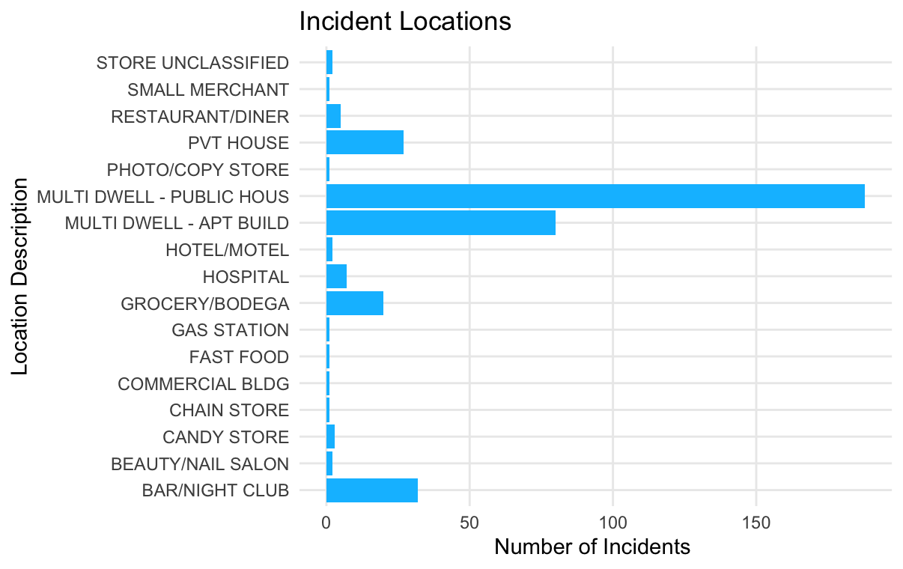
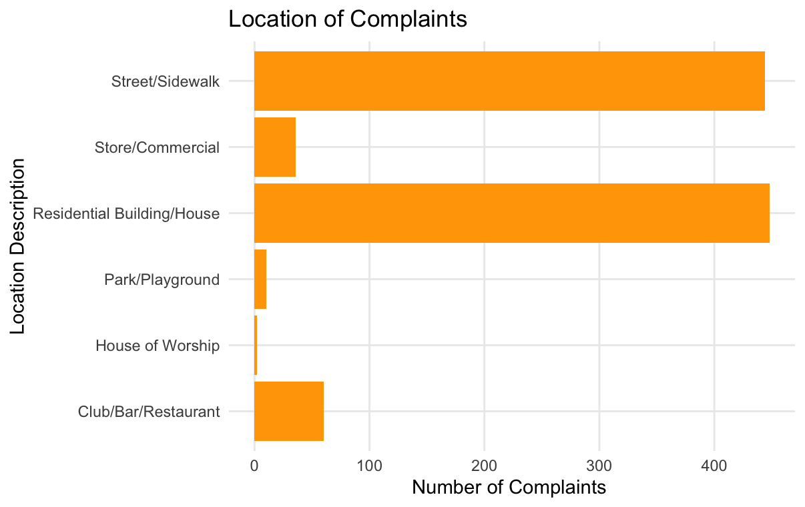

Exploring the Factors of New York City Noise Complaints
311 Noise Complaints and NYC Shooting Incidents
Introduction
Noise is a major part of living in New York City. Cars going by, the subway rattling underground, different types of construction, and people going about their daily lives make up just a few of the sources for the constant level of noise in the city. It is inescapable. In 2024, New York residents filed over 700,000 noise complaints through 311, making it the most reported issue. Residential noise, which accounted for more that 356,000 complaints, was the most reported type of noise 1. Simultaneously, 2024 marked the third straight year of decreases in shootings and homicides, with a total of 3,622 fewer crimes than the previous year 2. However, even with the reduction of overall shooting violence, there has been an increase in shooting crimes amongst juveniles 3. This demonstrates there are still issues in the city with gun violence. Is there a potential connection between the two? Are there trends and patterns between the reports of shooting violence and noise complaints? This report, as a part of the wider group effort to analyze 311 noise data, will aim to look at the trends in noise complaints and reported shooting data to highlight the complex dynamics of urban life and the ongoing efforts required to enhance public safety and quality of life in the city.
Prior Research
There have been a few previous studies done on the connection between noise and crime. One study done in 2023 and published in the Journal of Interpersonal Violence looked at noise complaints and land rezoning as a predictor of hate crimes 4. By looking at crime in comparison to 311 data, the researchers were able to conclude that hate crimes are more likely in the neighborhoods where the noise complaints and land use rezoning are higher than the median.
Another study done in 2022 and published in the Journal of Public Economics explored the connection between being exposed to noise pollution and amount of violent crime in those areas 5. The study concluded that an increased exposure to noise pollution has led to an increase in violent crimes. This is due to the fact that noise poses a potential threat to human health and affects behavior.
For this report, the focus will be on examining trends in both noise complaints and shooting incidents, specifically looking at exact location types, occurrence time of day, and borough locations. By identifying any overlapping trends, this report aims to highlight areas where the city can focus their efforts to improve police patrol efficiency, in order to help make the city safer and improve the quality of life for its residents.
Acquiring the Data
For this analysis, three sets of data were used. They are 311 Noise Complaints, which contains 311 reports spanning from 2010-2025, NYPD Shooting Incident Data (Historic), which list of every shooting incident that occurred in NYC from 2006 through the end of 2024, and NYPD Shooting Incident Data (Year To Date), which lists of every shooting incident that occurred in NYC during the current calendar year (2025).
All of these data sets come from NYC Open Source Data and are very robust. Both the 311 Noise Complaints data and the NYPD Shooting Incident Data (Historic) data are very large data sets (the former having millions of rows and the latter having thousands), so for the sake of this report the focus will be data between 2022-2024.
After combining the two shooting datasets and filtering down to reports between 2022-2025, we are left with 1170 rows. Below is a glimpse at the first 10 rows.
After cleaning and filtering down the 311 noise complaint data, we are left with 1000 rows. Below is a glimpse at the first 10 rows.
Analysis
There are different aspects of this data that is interesting when examining any connections or trends between noise complaints and shooting reports in NYC.
Report Locations
When examining the shooting and noise complaint data, it was to important to look at the different types of locations where the incidents take place. For example, within the shooting dataset there is a location description column. This column gives a brief description of the location, such as Multi-Dwelling, Bar/Nightclub, Gas Station, Grocery Store, etc.
In the noise complaint data, there is a location type column, which gives the type of location, such as Residential Building/House, Street/Sidewalk, and Club/Bar/Restaurant.
As shown in the chart below, the majority of shooting incidences take place at Multi-Dwell Public Houses, which are mostly considered to be low income housing, followed by Mult Dwell Apartment Buildings and Bar/Nigh Clubs.

As for the noise complaints, the below chart demonstrates that Residential Building/House is the most common location type, followed closely by Street/Sidewalk.

Borough Locations
The distribution of shooting reports and noise complaints across the boroughs is shown in the following figures below.
The Bronx has reported 425 shootings between 2022 and 2025, which is the highest amongst the boroughs.

For noise complaints across Boroughs, the below chart illustrates the distribution complaints. Queens has had 357 noise complaints. 320 of those complaints are due to loud music/partying.

Time of Day
When these incidents and complaints are happening during the day are also important factors to take in to consideration.
For the shooting incidents, the most incidents are reported between 6pm and 2am, peaking around 10pm. This makes sense when looking at the location descriptions of shooting incidents, as one of the top locations was at bars/nightclubs, most of which have their prime business hours during the nighttime. Below is the distribution of shooting incidents by hour.
 This has a lot of overlap with the most common times for noise complaints in NYC. Noise complaints tend to begin to rise around 8pm, peaking around 11pm and midnight, and then decline into the morning hours 6.
This has a lot of overlap with the most common times for noise complaints in NYC. Noise complaints tend to begin to rise around 8pm, peaking around 11pm and midnight, and then decline into the morning hours 6.
Conclusions
According to the data, there are multiple trends that connect noise complaints and shooting incidents in NYC. As stated in the analysis above, most noise complaints are reported to be happening on the street/sidewalk or in a residential home. This is very similar to shooting incidents reported, as the majority are reported to be at multi dwelling public houses or apartment buildings. There are also similar trends for the time of day these events occur. Both of these have the most occurrences during the nighttime hours, with their peaks being around 10pm-12am. However, when you zoom out to look at the reported incidents at a borough level, there is a difference of where these events are occurring. Most shooting incidents are happening in the Bronx followed by Brooklyn, while for noise complaints, the majority are concentrated in Queens.
It is important to be aware of these trends and overlaps in order to keep the city safe. An ongoing issue discussed in the public space is the amount of police presence around the city. Many people, including Mayor Adams and Governor Hochul believe that an increase in police presence is necessary. While others disagree and believe the money should be used to help provide mental health help and other services to the homeless and other members of the city in need. The police department is typical the agency to respond to both of these events, so knowing where there is overlap and where the increases are can help the city be more efficient with their placement of police patrols, which could help with lowering costs to be allocated to other initiatives.
For future work, it would be interesting to look at the connections between crime and specific sources of noise pollution. For example, there is an ongoing conversation about violence in the subway stations and on trains. Are there any connections bewteen the amount of noise in the subway with the amount of crime that is present? Or do areas that have a lot of noise due to construction have a higher level of violence. Also it would be interesting to look further into the specific demographics involved with violent crimes to see if they experience higher levels of noise pollution at a more constant rate than other groups.
Footnotes
https://www.fox5ny.com/news/noise-tops-nycs-311-complaints-list-2024↩︎
https://www.nyc.gov/site/nypd/news/pr001/crime-down-across-new-york-city-2024-3-662-fewer-crimes↩︎
https://nypost.com/2025/04/26/us-news/number-of-nyc-teens-shot-skyrockets-nypd-data-shows/?utm_source=chatgpt.com↩︎
https://journals.sagepub.com/doi/abs/10.1177/08862605231158756?mi=ehikzz↩︎
https://www.mocoquietskies.org/journalism/noise-pollution-and-violent-crime-journal-of-public-economics-sept-23-2022?utm_source=chatgpt.com↩︎
https://www.newyorker.com/tech/annals-of-technology/mapping-new-york-noise-complaints↩︎